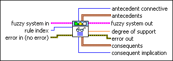
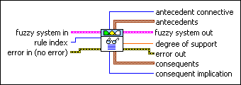

FL Get Rule VI
Owning Palette: Rules VIs
Requires: Full Development System
Returns the antecedents, consequents, and relationships for a rule in a fuzzy system.

 Add to the block diagram Add to the block diagram |
 Find on the palette Find on the palette |
Owning Palette: Rules VIs
Requires: Full Development System
Returns the antecedents, consequents, and relationships for a rule in a fuzzy system.

| Add to the block diagram |
Find on the palette |
 |
fuzzy system in specifies the complete information for a fuzzy system. Wire the fuzzy system out output from another VI to the fuzzy system in input of this VI. | ||||||||
 |
rule index specifies the index of the rule whose information you want to return. rule index corresponds to the order in which the rule was created. | ||||||||
 |
error in describes error conditions that occur before this node runs. This input provides standard error in functionality. | ||||||||
 |
antecedent connective indicates how this VI calculates the truth value of the aggregated rule antecedent.
|
||||||||
| antecedents returns the antecedents, or IF portions, of the rule. Each antecedent consists of three parts: the index of an input linguistic variable, an operator that specifies whether to calculate the degree of membership or the degree of non-membership of the input linguistic variable within a linguistic term, and the index of the linguistic term. The indexes correspond to the order in which the variables or linguistic terms were created. | |||||||||
 |
fuzzy system out returns the complete information for a fuzzy system. Wire this output to the fuzzy system in input of another VI. | ||||||||
 |
degree of support returns the weight, between 0 and 1, that you want to apply to the rule. Multiply the degree of support by the truth value of the aggregated rule antecedent to calculate the rule weight. | ||||||||
 |
error out contains error information. This output provides standard error out functionality. | ||||||||
| consequents returns the consequents, or THEN portions, of the rule. Each consequent consists of three parts: the index of an output linguistic variable, an operator that specifies whether to calculate the degree of membership or the degree of non-membership of the output linguistic variable within a linguistic term, and the index of the linguistic term. The indexes correspond to the order in which the variables or linguistic terms were created. | |||||||||
|
consequent implication returns the implication method this VI uses to scale the membership functions of the output linguistic variable based on the rule weight.
|